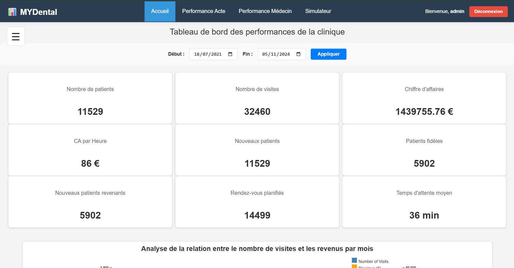

Repenser entièrement l'application MyDental : analyse et correction des indicateurs existants, ajout d'un simulateur permettant de calculer la rentabilité et proposition d'indicateurs complémentaires.
À partir d'une application déjà existante, nous devions corriger les éventuels bugs présents sur le site, puis ajouter de nouveaux indicateurs jugés pertinents pour aider à la gestion du cabinet dentaire. Enfin, nous devions ajouter une nouvelle fonctionnalité : un simulateur de rentabilité. Cette fonctionnalité a pour objectif d'estimer la rentabilité d'un acte pratiqué par un praticien en fonction du coût de l'acte et de la rémunération du médecin.
Pour être organisés et faciliter le travail de groupe, nous utilisions GitHub. Ainsi, chacun pouvait travailler sur sa branche de son côté, puis fusionner (merger) son travail sur la branche finale une fois la fonctionnalité prête. Pour être les plus efficaces possible, nous nous sommes répartis les tâches : une personne sur la correction des bugs, une autre sur la création des indicateurs et les deux dernières sur le simulateur de rentabilité. Nous avons choisi de mettre deux personnes sur cette dernière tâche, jugée plus complexe.
Personnellement, j'ai fait partie du binôme pour la création du simulateur. Nous avons rencontré un problème principal : la base de données à notre disposition ne contenait pas de tables pour les coûts ni pour le salaire des médecins. Nous avons donc dû générer des données fictives. Initialement, nous avions conçu un simulateur simple, sans filtre et sans possibilité d'enregistrer ou de modifier les simulations existantes. Je me suis alors interrogé sur les améliorations possibles. J'ai trouvé intéressant d'offrir la possibilité d'enregistrer une simulation pour un acte spécifique et de pouvoir la modifier ultérieurement, permettant ainsi de conserver un historique.
Cet historique nous a permis de créer un graphique qui offre la possibilité de faire des comparaisons entre les différents praticiens et actes. L'objectif est de voir si un praticien, pour un certain coût, dégage une marge plus importante ou, au contraire, plus faible que ses confrères.
- Présentation de la refonte de l'application
- Qualité des commentaires et de la présentation
- Utilisation de la technologie docker
- Créativité dans la recherche de nouveaux indicateurs
- Organisation à travers l'outil GitHub
- Apprendre à repenser une application en utilisant l'outil de conteneurisation Docker
- Être organiser au sein d'un groupe pour être le plus productif possible
Ce projet m'a permis de mieux comprendre l'utilisation et le rôle de la technologie Docker dans le développement d'une application web. Il m'a également permis de réaliser l'importance du choix des indicateurs : ceux-ci doivent être les plus pertinents possible afin d'accompagner la clinique dans sa prise de décision et l'aider à améliorer ses performances et sa productivité. Enfin, j'ai consolidé mes compétences en gestion de projet de groupe, garantissant ainsi le respect des consignes et des délais tout au long de notre collaboration.
Voir l'application (GitHub)